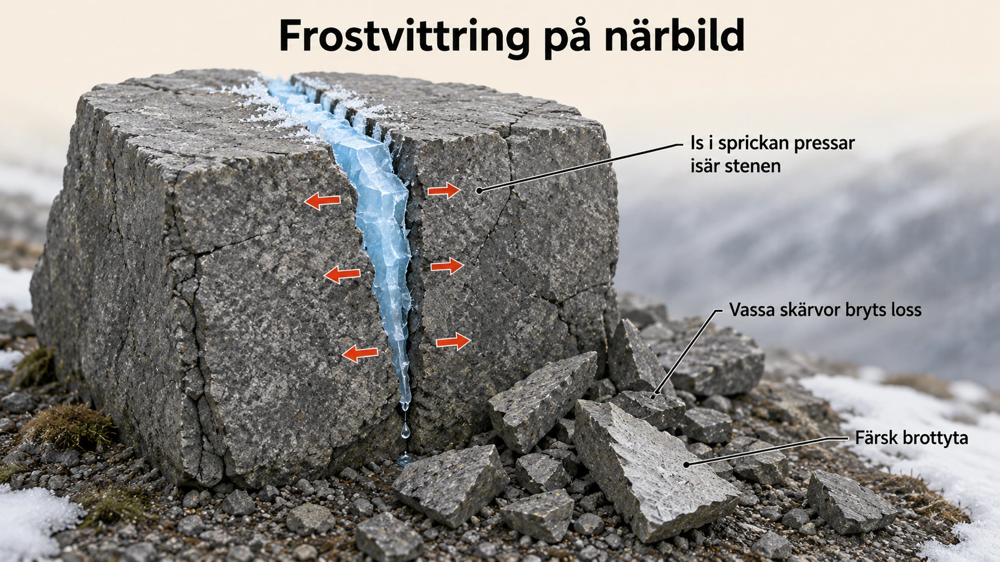
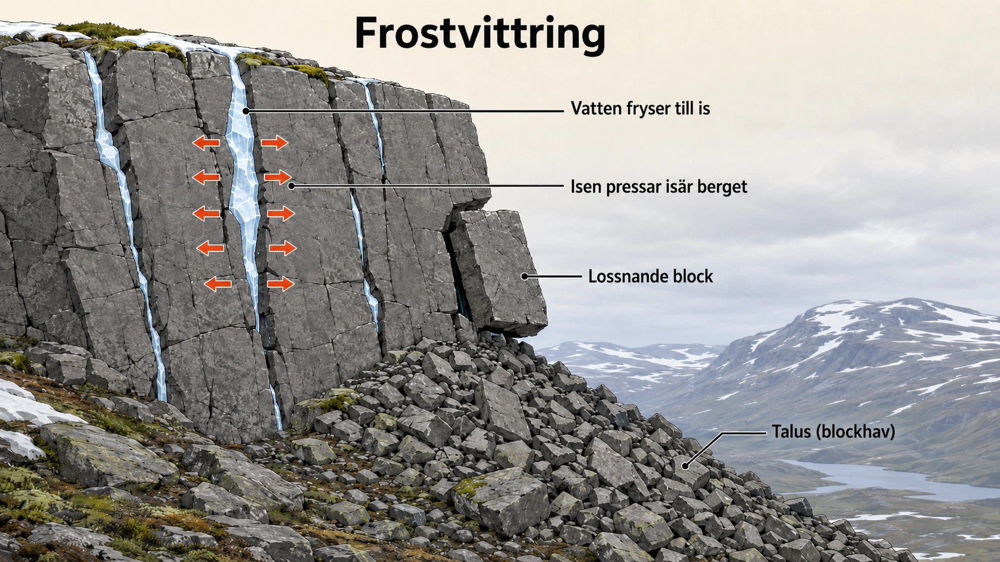
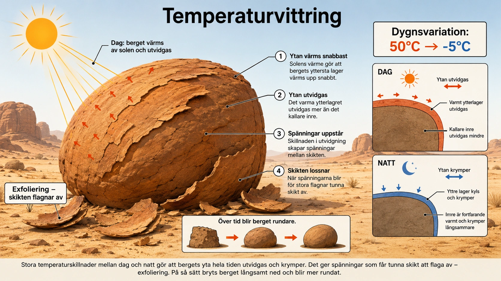
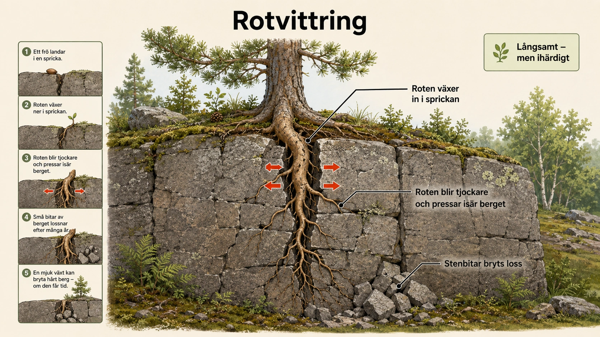
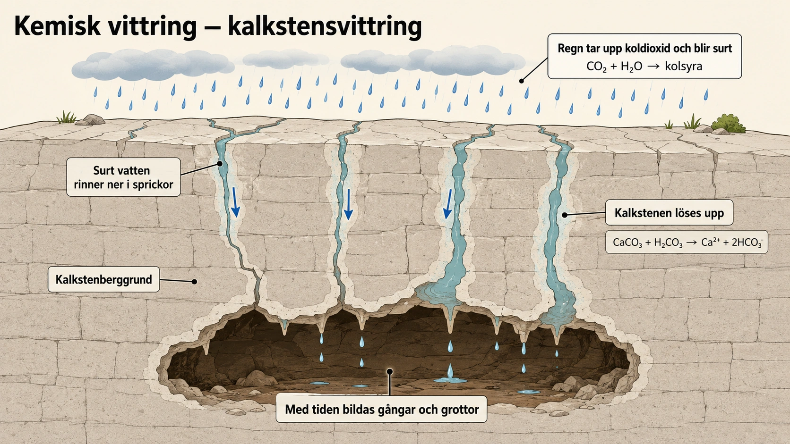
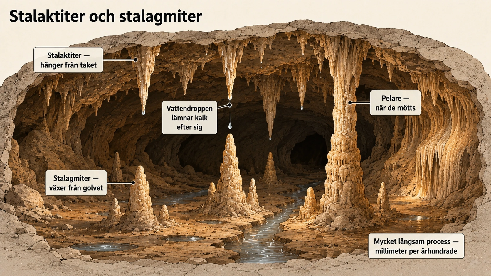
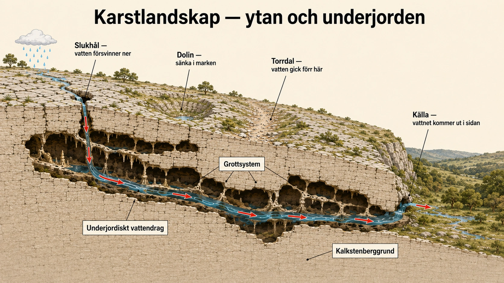

Vittring
— de yttre krafter som bryter ner berg —
Två sorters krafter formar jorden
I de fyra föregående avsnitten har vi sett hur jordens inre krafter bygger upp landskap. Plattorna rör sig och pressar ihop bergskedjor. Jordbävningar skakar berggrunden. Vulkaner reser sig och lägger till nytt material. Dessa krafter, som har sitt ursprung djupt nere i jorden, kallas endogena processer — det betyder "som kommer inifrån".
Men jordens yta står inte still efter att de inre krafterna har gjort sitt arbete. Berg som har lyfts upp under miljontals år börjar nästan omedelbart brytas ner. Kuster ändrar form. Dalar gröps ur. Stora landformer minskar långsamt. Detta sker genom en helt annan typ av krafter — de som arbetar utifrån, på jordens yta. De kallas exogena processer, av samma grekiska rot men med betydelsen "som kommer utifrån".
Hela jordens landskap formas av balansen mellan dessa två. Endogena processer bygger upp. Exogena processer bryter ner. Tillsammans skapar de den värld vi ser omkring oss.
Vad driver exogena processer?
Endogena processer drivs av värme från jordens inre. Exogena processer drivs av något annat — i grunden av solens energi. Solen värmer atmosfären och haven. Det driver väder, vind, vågor, regn, snö och temperaturskillnader. Det får vatten att avdunsta och regna ner igen, vilket gör att vatten rör sig över jorden i ett ständigt kretslopp.
Till detta kommer tyngdkraften, som inte i sig är en yttre kraft men som är avgörande för hur löst material rör sig. Sten som lossnar faller nedåt. Vatten rinner mot lägre terräng. Sluttningar rasar mot lägre liggande mark. Utan tyngdkraften skulle ingen av de andra exogena processerna fungera på samma sätt.
Det är denna kombination — solens energi som driver väder och vatten, plus tyngdkraften som ger riktning åt allt löst material — som formar jordens yta i alla områden där det inte finns vulkaner och aktiv plattektonik. Och eftersom även de mest aktiva vulkanområden på sikt brytt ner av exogena processer, är dessa krafter universella. Inget berg på jorden är säkert.
Vittring — när berg bryts sönder på plats
Den första delen av de exogena processerna är vittring. Vittring betyder att berg och sten bryts ner där de står. Materialet flyttas alltså inte — själva nedbrytningen sker på platsen. En bergvägg kan spricka. En sten kan smulas sönder. Mineraler kan lösas upp.
Det finns två huvudtyper av vittring som vi ska titta på i detalj i 5B och 5C. Mekanisk vittring innebär att berget bryts sönder i mindre bitar utan att själva ämnet förändras kemiskt. Kemisk vittring innebär att mineraler i berget faktiskt förändras — de reagerar med vatten, syre eller svaga syror och blir till nya ämnen, eller löses upp helt.
Båda processerna sker överallt på jorden, men i olika takt och med olika resultat beroende på klimatet. I kallare och torrare områden dominerar mekanisk vittring. I varmare och fuktigare områden dominerar kemisk vittring. I Sverige, där klimatet är fuktigt men kallt, sker båda — och det är därför vi har både rasbranter i fjällen (mekanisk vittring) och kalkgrottor på Gotland (kemisk vittring).
Erosion — när material nöts bort och transporteras
När material väl har lossnat genom vittring börjar nästa steg: erosion. Erosion betyder att löst material nöts bort och flyttas till en ny plats. Det sker genom rinnande vatten, vågor, vind eller glaciärer.
Skillnaden mellan vittring och erosion är viktig och pedagogiskt central. Vittring bryter sönder berget på plats. Erosion tar med sig det lösa materialet och transporterar det vidare. Det är samma som skillnaden mellan att hugga ner ett träd och att flytta det stora vedet. Båda är delar av samma övergripande process — men de är olika steg.
I de kommande avsnitten (6 och 7) tittar vi närmare på erosion och hur material rör sig genom landskapet. Här i avsnitt 5 håller vi oss till det första steget — själva nedbrytningen.
Transport och avlagring
När material har eroderats kan det transporteras långa vägar. Sand, grus, lera och sten kan föras med floder mot havet. Vinden kan flytta sand över ökenlandskap. Glaciärer kan skjuta enorma mängder stenmaterial framför sig. Allt detta är fortsatta delar av erosionsprocessen.
Till slut tappar vattnet, vinden eller isen sin kraft. Då lägger sig materialet ner på en ny plats. Det kallas avlagring eller sedimentation. Floder bygger upp deltan när de når sin mynning. Glaciärer lämnar efter sig moränhögar när de smälter. Vinden bygger upp sanddyner när den minskar.
Det är denna trippel — vittring, erosion, avlagring — som formar nästan alla landskap på jorden. Material som har varit en del av ett berg i hundra miljoner år kan på några tusen år flyttas genom vittring och erosion, och hamna som ett tunt lager sediment på havsbottnen flera tusen kilometer bort. Jordens landskap är aldrig i vila.
Tyngdkraftens roll
Tyngdkraften påverkar landskapet på sätt som ibland glöms bort. När berg och jord lossnar i en sluttning rasar materialet nedåt. Ras, jordskred, slamströmmar och laviner är alla exempel på detta. Oftast börjar det med att vittring försvagar berget. Sedan kan regn, snösmältning eller jordbävning få det lösa materialet att röra sig. Tyngdkraften gör resten.
Dessa sluttningsprocesser kommer vi titta närmare på i avsnitt 7. För nu räcker det att veta att tyngdkraften är en av de exogena processernas tysta drivkrafter. Den gör att löst material aldrig blir kvar där det lossnar — det kommer alltid sluta lägre i landskapet.
Sammanfattning
Exogena processer är jordens yttre krafter. De drivs framför allt av solens energi, väder, vatten, vind, is och tyngdkraft. De arbetar långsamt men ständigt, och under lång tid kan de förändra hela landskap. Berg nöts ner. Dalar gröps ur. Kuster ändrar form. Nytt land byggs upp av avlagrat material.
Tillsammans med de endogena processer vi sett i avsnitt 2-4 (plattektonik, jordbävningar, vulkaner) formar de exogena processerna en pågående cykel. Inre krafter bygger upp. Yttre krafter bryter ner. Resultatet är jorden som vi känner den.
I nästa underdel ska vi titta närmare på den första delen av denna nedbrytning: vittring. Vi börjar med mekanisk vittring — när berg bryts sönder utan att kemiskt förändras.
Två sorters krafter formar jorden
- Jorden formas av två slags krafter
- Endogena processer = inifrån (vulkaner, jordbävningar, plattor)
- Exogena processer = utifrån (väder, vind, vatten, is)
- Endogena bygger upp, exogena bryter ner
Jordens yta ändras hela tiden. Vi har sett hur inre krafter — som plattornas rörelser, jordbävningar och vulkaner — bygger upp landskap. Dessa kallas endogena processer, som betyder "kommer inifrån".
Men det finns också krafter som arbetar utifrån, på jordens yta. De bryter ner berg, ändrar kuster och formar landskapet. Det är exogena processer, som betyder "kommer utifrån".
Endogena krafter bygger upp. Exogena krafter bryter ner. Tillsammans skapar de jorden vi ser.
Vad driver exogena processer?
- Exogena processer drivs av solens energi
- Solen ger oss väder, vind, regn och temperaturskillnader
- Också tyngdkraften är viktig
- Den gör att löst material faller nedåt
Exogena processer drivs framför allt av solens energi. Solen värmer atmosfären och haven. Det skapar väder, vind, regn, snö och temperaturskillnader.
Tyngdkraften är också viktig. Sten som lossnar faller nedåt. Vatten rinner mot lägre terräng. Utan tyngdkraften skulle löst material bara stanna där det lossnar.
Vittring — när berg bryts sönder på plats
- Vittring = berg bryts ner där det står
- Materialet flyttas inte än — det bara bryts sönder
- Två typer: mekanisk och kemisk vittring
- Mekanisk = berget spricker eller smulas sönder
- Kemisk = ämnena i berget förändras
Vittring betyder att berg bryts ner där det står. Materialet flyttas inte än. En bergvägg kan spricka. En sten kan smulas sönder. Mineraler kan lösas upp.
Det finns två typer av vittring:
- Mekanisk vittring: berget bryts sönder i mindre bitar, men ämnet förändras inte
- Kemisk vittring: ämnena i berget förändras eller löses upp
Vi tittar närmare på båda i 5B och 5C.
Erosion — när materialet flyttas
- Erosion = löst material nöts bort och transporteras
- Det sker genom vatten, vind, vågor eller is
- Skillnad: vittring bryter sönder, erosion flyttar
- Vi tittar närmare på erosion i nästa avsnitt (6)
När material har lossnat genom vittring kan det flyttas. Det kallas erosion. Erosion sker genom rinnande vatten, vågor, vind eller glaciärer.
Skillnaden mellan vittring och erosion är viktig. Vittring bryter sönder berget på plats. Erosion tar med sig materialet och flyttar det. Det är som skillnaden mellan att hugga ner ett träd och att flytta veden bort.
Avlagring — material läggs ner igen
- När vatten, vind eller is tappar kraft läggs material ner
- Det kallas avlagring eller sedimentation
- Floder bygger upp deltan
- Vinden bygger upp sanddyner
- Glaciärer lämnar moräner
Till slut tappar vattnet, vinden eller isen sin kraft. Då läggs materialet ner på en ny plats. Det kallas avlagring eller sedimentation.
Floder bygger upp deltan vid sina mynningar. Vinden bygger upp sanddyner. Glaciärer lämnar moräner efter sig när de smälter. Allt detta är nytt land som byggts av material som tidigare varit en del av berg någonstans.
Tyngdkraftens roll
- Tyngdkraften drar löst material nedåt
- Det kan bli ras, skred, slamströmmar eller laviner
- Vittring försvagar berget först
- Sedan får regn, snösmältning eller jordbävning det att röra sig
Tyngdkraften är också en viktig del av de exogena processerna. När berg och jord lossnar i en sluttning rasar materialet nedåt. Det kan bli ras, jordskred, slamströmmar eller laviner.
Oftast börjar det med att vittring försvagar berget. Sedan kan regn, snösmältning eller en jordbävning få det lösa materialet att röra sig. Tyngdkraften gör resten. Vi tittar närmare på detta i avsnitt 7.
Sammanfattning
- Exogena processer = jordens yttre krafter
- De drivs av solens energi och tyngdkraften
- De bryter ner och flyttar material
- Vittring → erosion → avlagring
- Inre krafter bygger upp, yttre krafter bryter ner
Exogena processer är jordens yttre krafter. De drivs av solens energi och tyngdkraften. De arbetar långsamt men ständigt. Under lång tid kan de förändra hela landskap.
Tillsammans med de endogena processerna (plattor, jordbävningar, vulkaner) formar de en pågående cykel. Inre krafter bygger upp. Yttre krafter bryter ner.
I nästa underdel tittar vi på mekanisk vittring — när berg bryts sönder utan att kemiskt förändras.
Den stora balansen — när uppbyggande och nedbrytande krafter möts
I de fyra föregående avsnitten har vi sett endogena processer — krafterna som har sitt ursprung djupt nere i jorden. Plattorna pressas ihop och berg reser sig. Magma stiger och vulkaner växer. Jordskorpan vrids och skjuts. Allt detta är uppbyggande krafter. De skapar landformer som annars inte skulle finnas.
I detta avsnitt och de följande tittar vi på det motsatta — exogena processer som bryter ner. Och det är värt att stanna upp och tänka över vad det betyder att jorden formas av just dessa två motsatta krafter samtidigt.
Om bara endogena processer fanns skulle jorden vara täckt av enorma, oöverblickbara berg och vulkaner. Inget skulle nötas ner. Berg skulle bara fortsätta växa, om än långsamt. Mount Everest skulle vara mycket högre än 8 800 meter — kanske 15 000 eller 20 000 meter — om inget hade nött ner det.
Om bara exogena processer fanns skulle jorden vara helt platt. Vittring och erosion skulle ha skarp alla landformer ner till en låg, slät yta. Det finns faktiskt namn för detta hypotetiska tillstånd — geologer kallar det en peneplan, "nästan-slätt". Det är vad landet skulle bli om inget byggdes upp på nytt.
Verkligheten är någonstans mittemellan. Plattorna fortsätter att röra sig och bygga upp berg. Samtidigt nöts dessa berg ständigt ner av väder, vatten, vind och is. Mount Everest växer fortfarande med några millimeter per år genom plattektoniken — men samtidigt nöts den ner ungefär lika mycket av erosion. Höjden förändras knappast, men varje atom av berget byts ut över miljontals år.
Det är en av geologins djupaste insikter. Landskapet vi ser är inte statiskt. Det är en pågående balans. Och balansen mellan endogen och exogen process är vad som avgör hur landskapet ser ut på olika platser. Aktiva bergskedjor (Himalaya, Anderna) växer fortfarande snabbare än de nöts ner — så de stiger. Gamla bergskedjor (Skanderna, Appalacherna) har slutat växa men nöts fortfarande ner — så de blir lägre. Och områden utan plattektonik (gamla kontinentala sköldar som mitten av Sverige) har redan nötts ner till relativt platta landskap över hundratals miljoner år.
Tidsskalor — hur länge tar det att nöta ner ett berg?
Exogena processer är långsamma. Det är lätt att glömma hur långsamma. På en mänsklig livstid syns nästan ingenting hända i ett bergslandskap. Klipporna ser likadana ut. Dalarna är desamma. En människa som klättrar i Skanderna idag ser nästan exakt samma landskap som hennes farfarsfar gjorde för hundra år sedan.
Men det är en illusion av stabilitet. Bergen rör sig — bara så långsamt att vi inte märker det.
Hur långsamt? Forskare mäter erosionshastigheter genom flera olika metoder. Ett vanligt sätt är att studera hur mycket sediment som en flod transporterar till havet. Genom att räkna sedimentmängden och dela den med flodområdets storlek kan man få ett mått på hur mycket berg som nöts ner per år.
Typiska värden:
- I aktiva bergskedjor som Himalaya: 1-5 millimeter per år
- I tempererade områden som Sverige: 0,01-0,1 millimeter per år
- I gamla kontinentala sköldar: 0,001-0,01 millimeter per år
- I torra ökenområden: nästan ingen mätbar erosion
Det betyder att Mount Everest, som är cirka 8 800 meter hög, skulle nötas helt ner till havsnivå på ungefär 2-4 miljoner år om plattektoniken slutade verka. Det låter länge — men det är extremt kort i geologisk tid. Jorden är 4,6 miljarder år gammal. Det är som en sekund av jordens liv.
Gamla bergskedjor som Skanderna nöts långsammare, men har också haft mer tid på sig. Skanderna är cirka 400 miljoner år gamla och var en gång lika höga som Himalaya idag. Nu är de bara cirka 2 000 meter höga i sina högsta delar. Vittring och erosion har under hundratals miljoner år nött ner dem till bråkdelen av deras ursprungliga storlek.
Det här är en av de svåraste lektionerna inom geografi: tidsskalan i naturen är ofta så lång att den ligger utanför vår intuitiva förståelse. När vi tänker på "långsamt" tänker vi på en bil som kör i 30 km/h. För geologin är 1 millimeter per år snabbt. Vittring och erosion arbetar på skalor som är nästan helt osynliga för oss — men över miljontals år omformar de hela kontinenter. Det är den verkliga lärdomen om exogena processer: var inte förvirrad av att inget syns hända. Det är just därför det är så kraftfullt.
Tre sätt att spränga ett berg utan att förändra det kemiskt
Mekanisk vittring betyder att berg och sten bryts sönder i mindre bitar, men utan att själva ämnet förändras kemiskt. Stenen är fortfarande samma sorts sten. Den har bara spruckit, krossats eller delats upp i mindre delar. Det är skillnaden mot kemisk vittring, där mineralerna i berget faktiskt förändras — något vi tittar på i 5C.
Mekanisk vittring sker överallt där berg utsätts för fysiska påfrestningar. I kalla klimat dominerar frost. I varma och torra klimat dominerar temperaturväxlingar. I bevuxna områden bidrar växtrötter. Tre processer som verkar olika, men som alla har samma resultat — berget delas upp i mindre bitar.
Frostvittring
Frostvittring är den viktigaste formen av mekanisk vittring i kalla och tempererade områden, alltså bland annat i fjäll, bergsområden och alla platser där temperaturen ofta växlar mellan plusgrader och minusgrader. För Sverige är det den dominerande mekaniska vittringsprocessen.
Processen är enkel att förstå. Vatten rinner ner i små sprickor i berget. När temperaturen sjunker under noll fryser vattnet till is. Och nu kommer det avgörande: när vatten fryser, utvidgas det. Is tar ungefär 9 procent större volym än samma mängd flytande vatten. Det betyder att isen i sprickan pressar mot sprickans väggar med stor kraft.
Första gången växer sprickan kanske bara mikroskopiskt. Men när cyklen upprepas — fryser, tinar, fryser, tinar — år efter år, växer sprickan stadigt. Till slut kan stora stenblock brytas loss från en bergvägg.

Resultatet syns tydligt i fjällandskapet. Vid foten av branta bergssidor samlas ofta stora mängder lösa stenar som har brutits loss av frostvittringen ovanför. Sådana stensamlingar kallas talus eller blockhav. En vandrare som korsar ett blockhav i Skanderna går bokstavligen ovanpå århundraden av frostvittring.
Frostvittring är extra effektiv där temperaturen ofta pendlar runt nollpunkten. Höstar och vårar är därför särskilt aktiva tider — då fryser och tinar vattnet om och om igen. I områden där det bara är minusgrader hela vintern fryser sprickorna till is och stannar så — det är tinandet som gör att processen fortsätter.

Temperaturvittring
Den andra mekaniska vittringsprocessen är temperaturvittring. Den sker när berg värms upp och kyls ner. När sten värms upp utvidgas den något. När den kyls ner drar den ihop sig. Om detta sker många gånger kan berget försvagas — det är samma princip som gör att metalldelar i en bilmotor till slut spricker av termisk utmattning.
Temperaturvittring är vanligast i områden med stora temperaturskillnader mellan dag och natt. Öknar är klassiska exempel. På dagen kan markens yta hettas upp till 50-60 grader. På natten sjunker temperaturen ofta under noll. Skillnaden är dramatisk, och det är just denna växling som är effektiv.
Problemet för berget är att ytan och det inre inte värms upp och kyls ner lika snabbt. Stenens yta värms upp av solen och utvidgas mer än det inre. Det skapar spänningar mellan skikt. Efter tillräckligt lång tid kan tunna skikt spricka loss från berget, ungefär som skal som lossnar från en lök. Detta fenomen kallas exfoliering, eller på svenska "skalvittring".
I tropikerna fungerar temperaturvittring också, men annorlunda. Där spelar ofta solsken på fuktigt berg en roll — den heta ytan kyls plötsligt av regnskurar. Plötsliga temperaturchocker kan spränga loss bitar av sten.
Temperaturvittring förändrar inte bergets kemi. Den bara spränger loss bitar. Men resultatet är detsamma som med frostvittring — berget delas upp i mindre delar, som sedan kan transporteras bort av erosionsprocesser.

Rotvittring
Den tredje mekaniska vittringsprocessen är rotvittring. Den sker när växters rötter växer ner i sprickor i berg eller sten. Det kan låta som en mild process — växter mot sten — men resultatet är förvånansvärt effektivt.
En liten frö landar i en spricka. Det börjar gro. Den första roten är tunn, kanske bara några millimeter, och tränger in i sprickan utan motstånd. Men när växten växer blir roten tjockare. Och tjockare. Den pressar mot sprickans väggar med en kraft som ökar för varje år.
Med tiden kan sprickan vidgas. Om flera rötter växer i samma område kan de tillsammans bryta loss bitar av berget. Det här är synligt på många platser — gamla murar och stenfundament där träd och buskar har fått fäste, hällar i skogen där rötter slingrar sig över och under stenen, och vägbankar där frön spritts av vinden och fått rotfäste i sprickor.
Rotvittring visar att även levande organismer kan bidra till nedbrytning av landskap. Det är samma princip som plattektoniken — långsam, ihärdig kraft över lång tid. En enskild rot är obetydlig. Tusentals rötter under tusentals år är en av jordens mest effektiva nedbrytande krafter.
Andra organismer bidrar också. Lavar utsöndrar svaga syror som långsamt löser upp berg — det är på gränsen mellan mekanisk och kemisk vittring. Mossor håller kvar fukt mot bergytan, vilket gör frostvittringen mer effektiv. Maskar och insekter blandar om jord på sätt som påverkar hur snabbt berg under jorden vittrar. Livet och berget är aldrig riktigt separata.

Tre processer, samma resultat
Frost, temperatur och rötter — tre olika krafter som verkar på olika sätt, men med samma resultat. Berget bryts sönder i mindre bitar utan att förändras kemiskt. Stenen är fortfarande samma sten — den är bara mindre nu.
När materialet sedan transporteras bort av vatten, vind, is eller tyngdkraft blir det en del av erosionen. Men det första steget — själva nedbrytningen där berget står — är vittringen.
I nästa underdel ska vi titta på den andra typen av vittring: kemisk vittring. Där förändras inte bara bergets form, utan dess själva sammansättning. Det är en annan process, men den ger oss några av jordens mest dramatiska landskap — bland annat grottor och underjordiska gångar.
Tre sätt att spränga ett berg
Mekanisk vittring betyder att berg bryts sönder i mindre bitar — men utan att ämnet förändras. Stenen är fortfarande samma sten. Den är bara mindre nu.
Det finns tre vanliga sätt det kan ske: frostvittring, temperaturvittring och rotvittring.
Frostvittring
- Vatten rinner ner i sprickor i berget
- När vattnet fryser blir det större
- Isen pressar isär sprickan
- Efter många år bryts bitar loss
- Vanligast i fjäll och kalla områden
Frostvittring är den viktigaste typen av mekanisk vittring i Sverige. Vatten rinner ner i sprickor i berget. När temperaturen sjunker under noll fryser vattnet till is.
Det här är poängen: när vatten fryser blir det större. Is tar mer plats än flytande vatten. Då pressar isen mot sprickans väggar och vidgar dem.
Första gången växer sprickan bara lite. Men när det fryser och tinar om och om igen, år efter år, växer sprickan. Till slut kan stora stenblock lossna.
I fjällen kan man se resultatet. Vid foten av branta bergssidor ligger massor av lösa stenar som brutits loss av frostvittringen. Sådana stensamlingar kallas talus eller blockhav.
Lägg märke till:
- Vatten i sprickorna som blivit till is
- Isen pressar isär sprickorna
- Skärvorna som brutits loss är vassa och kantiga — inte rundade
Fundera: Varför fungerar frostvittringen extra bra när det fryser och tinar om och om igen?
Temperaturvittring
- Berg utvidgas när det blir varmt
- Berg krymper när det blir kallt
- När det växlar mycket blir det sprickor
- Vanligast i öknar med stora dygnsvariationer
Temperaturvittring sker när berg värms upp och kyls ner gång på gång. När sten värms upp utvidgas den. När den kyls ner krymper den.
Om detta sker många gånger blir berget försvagat. Det är vanligast i områden med stora skillnader mellan dag och natt — som öknar. På dagen kan solen hetta upp berget till 50-60 grader. På natten kan temperaturen sjunka under noll.
Eftersom bergets yta värms upp snabbare än det inre blir det spänningar. Tunna skikt kan lossna och flagna av — det kallas exfoliering.
Rotvittring
- Växters rötter växer in i sprickor
- När roten blir tjockare pressar den isär sprickan
- Långsamt — men effektivt
- Visar att levande organismer kan bryta ner berg
Rotvittring sker när växters rötter växer ner i sprickor i berg eller sten. Först är roten tunn och tränger lätt in. Men när växten växer blir roten tjockare och pressar mot sprickans väggar.
Med tiden kan sprickan vidgas så mycket att bitar av berget bryts loss. Rotvittring visar att även levande organismer kan bidra till att bryta ner landskap — långsamt, men ihärdigt.
Tre processer, samma resultat
- Frost, temperatur och rötter — tre olika krafter
- Alla bryter sönder berg i mindre bitar
- Ämnet i berget förändras inte
- Sedan kan materialet flyttas bort av erosion
Frost, temperatur och rötter verkar på olika sätt, men resultatet är detsamma — berg bryts sönder i mindre bitar. Stenen är fortfarande samma sten, bara mindre.
När materialet sedan transporteras bort av vatten, vind, is eller tyngdkraft blir det en del av erosionen. Men nedbrytningen själv — där berget står — är vittringen.
I nästa underdel ska vi titta på en annan typ av vittring: kemisk vittring, där själva ämnet i berget förändras.
Frostvittring i Skanderna — när blockhaven berättar bergens historia
Den som vandrar i de svenska fjällen kan inte undvika att se det. Stora samlingar av lösa stenar nedanför branta bergssidor. Hela sluttningar fyllda med kantiga stenblock. Ibland täcker dessa blockhav vidsträckta områden. För den som inte vet vad det är kan det se ut som tusentals stenar slumpvis utspridda. Men det är allt annat än slumpmässigt. Det är frostvittringens berättelse, ristad i landskapet.
Skanderna är en av Europas äldsta bergskedjor. För 400 miljoner år sedan, under den kaledoniska bergskedjebildningen, var de jämförbara med Himalaya idag — branta, höga, dramatiska. Sedan har endogen aktivitet i området stannat av. Inga nya berg byggs upp. Endast exogena processer har verkat. I 400 miljoner år har vittring och erosion gnagt på berget, och de en gång alpina topparna är nu nötta ner till de relativt mjuka, rundade fjällformer vi ser idag.
I detta arbete har frostvittringen spelat huvudrollen. Skanderna ligger i ett område där temperaturen pendlar omkring nollpunkten under stora delar av året — vår, höst och även korta perioder under sommar och vinter. Det är precis de förhållanden som gör frostvittringen mest effektiv. Vatten kan rinna in i sprickor under dagens plusgrader och frysa till is under nattens minusgrader. Cykeln upprepas hundratusentals gånger varje sekel.
Resultatet är talus och blockhav — själva landskapsformerna som visar att frostvittringen har varit aktiv. Vid foten av i stort sett varje brant fjällsida i Skanderna finns sluttningar av lösa stenar. Vissa har varit där sedan istidens slut för 10 000 år sedan. Andra är yngre, brutna loss från berget för bara decennier eller sekel sedan.
Geografer kan ibland datera blockhaven genom att studera hur mycket lavar har hunnit växa på stenarnas yta. Lavar växer mycket långsamt — kanske bara några millimeter per århundrade — så storleken på lavar på en sten ger en uppskattning om hur länge stenen legat där. Det är som en naturlig klocka, fast långsam, som möjliggör att se vilka delar av blockhavet är gamla och vilka är nyligen tillkomna.
Blockhaven är också geologiska bevis på det vidare temat i kapitlet. Inre krafter byggde upp Skanderna för länge sedan. Yttre krafter — främst frostvittring i detta klimat — bryter ner dem nu. Varje sten i blockhavet är en liten påminnelse om att jorden är i ständig förändring, även när den ser stilla ut.
Exfoliation i Sahara — när öknens temperaturchocker spränger berg
I motsatsen till Skandernas frostvittring står Saharas ökenvittring. Här är klimatet helt annorlunda. Det är torrt — på vissa platser regnar det inte alls under år. Det är varmt på dagen — temperaturer på 50 grader är vanliga. Och det är iskallt på natten — temperaturer under noll förekommer också, även mitt i öknen, eftersom det inte finns någon fuktighet i luften som kan hålla kvar dagsvärmen.
I detta klimat dominerar temperaturvittringen. Frostvittring är inte särskilt effektiv eftersom det knappt finns något vatten i sprickorna. Men temperaturskillnaden mellan dag och natt är dramatisk, och det räcker för att spränga sönder berg på sätt som har skapat några av öknens mest karakteristiska landformer.
En av de mest spektakulära är exfoliation — den process där tunna skikt av berg flagnar av som lökskal. På många platser i Sahara kan man se enormaforma stenblock med skal som har lossnat. Vissa block ser ut som om de håller på att skala sig själva. Andra har redan tappat de yttersta lagren och blottar gladare ytor under.
Processen drivs av två saker. För det första värms bergsens yta snabbt upp av solen. Det inre uppvärms långsammare, eftersom berg leder värme ganska dåligt. Resultatet är att ytan utvidgar sig mer än det inre, vilket skapar spänningar i de yttre skikten. För det andra finns på vissa platser saltinitiation. När det väl regnar — vilket händer sällan men det händer — kan saltlösningar tränga in i mikroskopiska sprickor. När vattnet sedan avdunstar i den torra luften bildas saltkristaller som expanderar i sprickan, ungefär som is gör vid frostvittring.
Effekten är att Saharas berg ofta har en distinktivt rundad form. Skarpa kanter har slipats av temperatur- och saltvittring. Stora stenblock som i fuktigare klimat skulle ha kantiga former blir i öknen ofta rundade och kullformade. Det är inte erosion från vatten — det är vittring som har format dem på plats.
För att verkligen förstå mekanisk vittring är det värdefullt att se båda extremerna. Skanderna visar oss frostvittringens fjäll-stenröjda landskap. Sahara visar oss temperaturvittringens torra, runt avskalade berg. Båda är samma övergripande process — berg som bryts sönder fysiskt utan kemisk förändring — men i helt olika klimat ger den helt olika landskap. Det är detta som gör mekanisk vittring så pedagogiskt rik: samma princip, fundamentalt olika uttryck beroende på var man är på jorden.
När själva ämnet förändras
I förra underdelen såg vi mekanisk vittring — berg som spricker, krossas eller flagnar av, utan att själva materialet förändras. Stenen som lossnar är fortfarande samma sten. Men det finns en helt annan typ av vittring där något mer dramatiskt händer: kemisk vittring. Här reagerar mineralerna i berget med vatten, syre eller svaga syror, och förändras till nya ämnen. Ibland löses de upp helt och försvinner.
Skillnaden är fundamental. Mekanisk vittring delar berget. Kemisk vittring förvandlar det. Båda processerna sker överallt — men de dominerar olika på olika platser. I kalla, torra klimat tar mekanisk vittring överhanden. I varma, fuktiga klimat — där det finns rikligt med vatten och kemiska reaktioner går snabbare — dominerar kemisk vittring. Sverige ligger någonstans mittemellan, så vi har båda.
Vatten är nyckeln
Kemisk vittring fungerar inte utan vatten. Rent vatten kan i sig påverka berg, men det är när vattnet innehåller lösta ämnen som det blir riktigt effektivt. Och nästan allt regn på jorden gör det.
När regnvatten faller genom luften tar det upp koldioxid — den gas vi alla känner till från andningen och från klimatdebatten. Tillsammans bildar vatten och koldioxid en svag syra som kallas kolsyra. Det är samma kolsyra som ger bubblor i läsk och mineralvatten, fast i mycket mindre mängd. Regnvatten är därför naturligt något surt — pH runt 5,6, jämfört med pH 7 för rent vatten.
Kolsyra är ingen aggressiv syra. Du kan dricka den utan problem. Men över mycket lång tid är den tillräckligt stark för att långsamt lösa upp vissa bergarter. Den mest påverkbara är kalksten.
Kalksten — en bergart som löser sig
Kalksten består till största delen av mineralet kalcit, eller med kemisk formel CaCO₃. Det är samma ämne som finns i musselskal, äggskal och korall — och det är inte en slump. Det mesta av jordens kalksten har faktiskt bildats av sådana organiska rester. För miljoner år sedan, när havsorganismer dog, sjönk deras kalkrika skal till havsbotten. Lager för lager byggdes upp, pressades ihop, och blev till bergart. Sedan höjdes områden ovan havsytan genom plattektonik — och nu står gamla havsbottnar som kalkstensplattor på land. Gotland är ett klassiskt exempel: hela ön är till stor del en gammal havsbotten från siluriska perioden, för cirka 420 miljoner år sedan.
Den kemiska reaktionen som löser upp kalksten är ganska enkel: surt vatten möter kalciumkarbonat, kalciumkarbonatet löses upp och bildar lösta joner som följer med vattnet bort. Berget försvinner — bokstavligen — och förs iväg som lösta ämnen i grundvattnet.

Kalkstensvittring och grottor
Processen att kolsyra löser upp kalksten kallas kalkstensvittring. Den går mycket långsamt — kanske bara en millimeter berg som försvinner per århundrade vid bästa förhållanden. Men över tusentals eller miljontals år kan resultatet bli dramatiskt.
Det börjar med små sprickor i kalkstenen. Surt regnvatten letar sig ner i sprickorna. Lite kalksten löses upp där vattnet passerar — sprickans väggar krymper, sprickan blir bredare. Bredare sprickor släpper igenom mer vatten, vilket gör att ännu mer kalk löses upp. Processen förstärker sig själv: mer vatten → mer upplösning → större spricka → ännu mer vatten.
Efter mycket lång tid kan smala sprickor bli vidsträckta gångar. Gångarna kan vidgas till salar. Salar kan kopplas ihop till hela grottsystem. Vad som började som en oansenlig spricka kan bli flera kilometer av underjordiska gångar.
Lummelundagrottorna — Sveriges exempel
I Sverige har vi ett av Europas mest kända exempel på kalkstensvittring — Lummelundagrottorna på Gotland. Gotlands berggrund består till stor del av kalksten från ett forntida hav, och under tusentals år har vatten letat sig genom kalkstensspjärnerna och löst upp dem.
Resultatet är ett system av grottor som idag har över 4 kilometer kartlagda gångar — och det finns sannolikt mer kvar att upptäcka. Inuti grottorna finns några av Sveriges mest spektakulära stalaktiter och stalagmiter — droppstensformationer som hänger från taket respektive växer upp från golvet.
Det är värt att tänka på vad detta innebär. Lummelundagrottorna är inte huggna eller borrade av människor. De är resultatet av regnvatten som, under hundratusentals år, långsamt löste upp kalkstenen och skapade hålrum där det förr var massivt berg. Hela utrymmet bildades av en kemisk reaktion som du själv kan göra hemma: häll citronsyra på en bit krita och se vad som händer. Naturen har bara haft mycket längre tid på sig.

Hur stalaktiter och stalagmiter bildas
Droppstensformationerna i grottor uppstår genom en motsatt process till själva kalkstensvittringen. När surt vatten i kalkstenens sprickor löser upp kalk följer kalken med vattnet. Men när vattnet sedan droppar fritt från ett grottak — där det inte längre är under tryck — kan koldioxid lämna vattnet och avdunsta. Då blir vattnet mindre surt, och det överskott av kalciumkarbonat som hade hållits löst faller ut igen som fast kalk.
Resultatet: vid den punkt där droppen lämnar taket avlagras en mikroskopisk ring av kalk. Nästa droppe avlagrar lite till. Och nästa. Och nästa. Över tusentals år byggs en stalaktit upp — en kalkpinne som pekar rakt nedåt från taket. Där droppen sedan träffar golvet sker samma sak, men i omvänd riktning: kalk samlas till en stalagmit som växer uppåt.
Tillväxttakten är extremt långsam — kanske bara några millimeter per århundrade. När en stor stalaktit eller stalagmit är en meter lång, kan den ha vuxit i 100 000 år. Det är därför grottformationer är så känsliga: en avbruten stalaktit kan inte snabbt ersättas, ens på generationers tid.
Karstlandskap
Områden där kemisk vittring av kalksten har skapat ett särskilt landskap kallas karstlandskap. Karst är inte bara grottor — det är ett helt landskap där ytan och underjorden hänger ihop. På ytan hittar man typiska former som visar att kalken under långsamt löses upp:
- Slukhål — sänkor i marken där vatten försvinner ner i berget
- Doliner — runda sänkor som kan bildas när berg löses upp eller när taket till en grotta rasar in
- Torrdalar — gamla dalgångar där vattnet en gång rann på ytan men nu försvinner ner under marken
- Källor — platser där underjordiskt vatten kommer upp till ytan igen, ofta långt från där det försvann
Karstlandskap har därför ofta få synliga vattendrag på ytan. Vattnet rinner istället under marken, genom de grottsystem som kalkstensvittringen skapat. På Gotland kan man se detta tydligt — vattnet från Martebo myr försvinner ner i berget och rinner genom Lummelundasystemet innan det kommer ut vid källor närmare kusten.
![Tvärsnitt av ett karstlandskap där terrängen sluttar tydligt — högre på vänster sida, lägre på höger. Uppe på den högre kalkstensplatån syns slukhål där vatten försvinner ner i berget, doliner som runda sänkor i marken, och en torrdal där vatten en gång rann. Under markytan finns ett nätverk av grottor och gångar med ett underjordiskt vattendrag som rinner nedåt med tyngdkraften. På den högra, lägre delen av bilden möter berget ett dalområde — där kommer källan ut från sidan av en klippa, så vattnet rinner ut horisontellt och bildar en bäck nere i det lägre området. Pilar visar vattnets väg från regn på platån, genom slukhålen, ner genom grottsystemet, och ut vid källan.](../../img/geologi/karstlandskap.webp)
Var sker kemisk vittring snabbast?
Kemisk vittring är beroende av två saker: vatten och temperatur. Mer vatten innebär mer reaktioner. Högre temperatur innebär snabbare kemiska reaktioner — det är en generell princip i kemin. Därför går kemisk vittring snabbast i varma och fuktiga klimat, som de tropiska regnskogarna. Där kan kalksten lösas upp på en bråkdel av den tid det tar i Sverige.
I Sverige är kemisk vittring viktigast i områden med kalkrik berggrund. Gotland och Öland är de mest karst-präglade områdena — där finns Lummelundagrottorna men också andra kalkstensformationer. Delar av Skåne har också kalksten. Och i fjällkedjan finns kalkrika områden där kemisk vittring spelar roll, även om det är långsammare i det kalla klimatet.
Det är värt att veta att kemisk vittring inte bara påverkar landskap. Den påverkar också vattenkvaliteten. Vattnet som rinner från kalkrika områden är ofta hårt vatten — rikt på upplösta kalciumjoner. Det är därför vatten från Gotland och Öland har en helt annan karaktär än det mjuka vatten som rinner från Sveriges granit-områden. Kalkvittringen är direkt synlig i ditt morgonkaffe om du bor på Gotland.
Sammanfattning
Kemisk vittring är när mineral i berg reagerar med vatten, syre eller svaga syror och förändras eller löses upp helt. Det är en annan process än mekanisk vittring — istället för att bryta sönder berget förvandlas själva ämnena.
Kalkstensvittring är den viktigaste formen i Sverige. Surt regnvatten löser upp kalksten i sprickor, och över tusentals år kan resultatet bli stora grottsystem. Lummelundagrottorna är vårt mest kända exempel. Inuti grottorna bildas stalaktiter och stalagmiter där droppande vatten lämnar kalk efter sig. På ytan ser man karstlandskapets typiska former — slukhål, doliner, torrdalar och källor.
I avsnitt 6 går vi vidare till nästa steg i de exogena processerna — erosion. Där tittar vi närmare på hur det vittrade materialet sedan flyttas av vatten, vind och is, och hur det formar landskapet i större skala.
När själva ämnet förändras
I förra underdelen såg vi mekanisk vittring — berget bryts sönder, men ämnet är samma. Nu kommer en helt annan typ av vittring där själva ämnet förändras. Det kallas kemisk vittring.
Mekanisk vittring delar berget. Kemisk vittring förvandlar det. Båda sker överallt — men kemisk vittring dominerar i varma, fuktiga klimat.
Vatten + koldioxid = kolsyra
- Kemisk vittring behöver vatten
- När regn faller tar det upp koldioxid från luften
- Vatten + koldioxid bildar kolsyra
- Regnvatten är därför svagt surt
Kemisk vittring fungerar inte utan vatten. Men det är när vattnet innehåller lösta ämnen som det blir riktigt effektivt.
När regn faller genom luften tar det upp koldioxid. Tillsammans bildar de en svag syra som kallas kolsyra — samma kolsyra som finns i läsk, fast mycket svagare. Det betyder att regnvatten är naturligt något surt.
Kolsyran är inte farlig att dricka. Men över mycket lång tid är den tillräckligt stark för att lösa upp vissa bergarter. Den viktigaste är kalksten.
Kalksten löser sig i surt vatten
- Kalksten kan långsamt lösas upp av surt vatten
- Den består av samma ämne som i musselskal och äggskal
- Mycket av Gotland är gammal kalksten från ett forntida hav
- Kalkstensvittring tar tusentals år
Kalksten är en bergart som löses upp av surt vatten. Den består till största delen av samma ämne som musselskal, äggskal och korall — kalciumkarbonat.
Det är ingen tillfällighet. Mycket av jordens kalksten har faktiskt bildats av döda havsorganismer som sjunkit till botten och blivit till sten under miljontals år. Gotland är ett bra exempel — hela ön är en gammal havsbotten från ett hav som fanns för 420 miljoner år sedan.
Lägg märke till:
- Regnet faller och tar upp koldioxid
- Vattnet rinner ner i sprickor i kalkstenen
- Kalken löses upp där vattnet passerar
- Med tiden bildas grottor där det förr var berg
Fundera: Hur kan vatten som inte ens är så surt lösa upp berg?
Hur grottor bildas
- Surt vatten rinner ner i små sprickor
- Kalken löses upp där vattnet rinner
- Sprickorna blir bredare och djupare
- Med tiden bildas gångar och grottor
- Det tar tusentals eller miljontals år
Det börjar med små sprickor i kalkstenen. Surt regnvatten letar sig ner i sprickorna. Lite kalksten löses upp där vattnet passerar — sprickan blir lite bredare.
Bredare sprickor släpper igenom mer vatten. Mer vatten löser upp mer kalk. Sprickorna växer snabbare och snabbare. Efter mycket lång tid kan smala sprickor bli vidsträckta gångar — och gångar kan bli stora grottor.
Lummelundagrottorna
- Lummelundagrottorna ligger på Gotland
- De är ett av Sveriges mest kända exempel på kalkstensvittring
- De har över 4 kilometer kartlagda gångar
- De innehåller stalaktiter och stalagmiter
I Sverige finns ett tydligt exempel på vad kemisk vittring kan göra — Lummelundagrottorna på Gotland. Under tusentals år har vatten letat sig genom kalkstensspjärnerna och löst upp dem.
Idag har grottorna över 4 kilometer kartlagda gångar. Inuti finns Sveriges mest spektakulära stalaktiter och stalagmiter — droppstensformationer som hänger från taket eller växer upp från golvet.
Stalaktiter och stalagmiter
- Stalaktiter hänger från taket (T som tak)
- Stalagmiter växer från golvet (G som golv)
- De bildas av droppande vatten som lämnar kalk efter sig
- När de möts bildar de en pelare
- De växer mycket långsamt — millimeter per århundrade
Stalaktiter hänger från taket. Stalagmiter växer upp från golvet. Båda bildas av vatten som lämnar kalk efter sig när det droppar.
När en droppe samlas vid taket lämnar den efter sig en mikroskopisk ring av kalk. Nästa droppe gör samma sak. Och nästa. Över tusentals år byggs det upp en kalkpinne — en stalaktit. Där droppen sedan träffar golvet sker samma sak, men i andra riktningen — en stalagmit växer upp.
När en stalaktit och en stalagmit möts bildar de en pelare. En meter hög stalaktit kan ha vuxit i 100 000 år — därför är grottformationer så känsliga och får aldrig brytas av.
Karstlandskap
- Karstlandskap uppstår där kemisk vittring format området
- Inte bara grottor — också ytformer
- Slukhål — vatten försvinner ner
- Doliner — runda sänkor i marken
- Källor — vatten kommer upp någon annanstans
Områden där kemisk vittring format landskapet kallas karstlandskap. Karst är inte bara grottor under jorden — det är ett helt landskap där ytan och underjorden hänger ihop.
På ytan finns typiska former:
- Slukhål — sänkor där vatten försvinner ner
- Doliner — runda sänkor i marken
- Källor — där vatten kommer upp igen
I karstlandskap rinner mycket vatten under marken istället för på ytan. På Gotland kan man se det tydligt — vatten försvinner i ett område och kommer upp igen flera kilometer bort.

Var sker kemisk vittring snabbast?
- Kemisk vittring går snabbare när det är varmt
- Den behöver också vatten
- Därför är den snabbast i tropikerna
- I Sverige är den viktigast på Gotland och Öland
Kemisk vittring behöver vatten och fungerar bättre i värme. Därför går den snabbast i varma och fuktiga klimat — som tropikerna.
I Sverige är kemisk vittring viktigast i områden med kalkrik berggrund — Gotland, Öland och delar av Skåne och fjällen.
Sammanfattning
- Kemisk vittring förändrar ämnet i berget
- Kalkstensvittring är viktigast — surt vatten löser upp kalksten
- Det skapar grottor, stalaktiter, stalagmiter
- Karstlandskap har typiska ytformer också
- Lummelundagrottorna är Sveriges kändaste exempel
Kemisk vittring förändrar bergets ämne, inte bara dess form. Den viktigaste typen är kalkstensvittring, där surt vatten långsamt löser upp kalksten. Resultatet kan bli grottor, droppstensformationer och hela karstlandskap.
I nästa avsnitt går vi vidare till erosion — vad som händer med det vittrade materialet när det flyttas av vatten, vind och is.
Tropikerna och vittringens paradox
Om kemisk vittring går snabbast i varma och fuktiga klimat, borde de tropiska regnskogarna ha den mest bördiga jorden på jorden. Där är det varmt året om, det regnar mycket, och vegetation frodas på ett sätt som inte är möjligt på högre breddgrader. Förutsättningarna för vittring är optimala. Och ändå — paradoxalt nog — har stora delar av tropikerna några av jordens mest mineralfattiga jordar. Hur kan det stämma?
Svaret ligger i samma process som gör vittringen så effektiv. När mineraler vittrar kemiskt löses ämnen ut ur berget och förs bort av vatten. I tempererade klimat — som Sveriges — sker detta långsamt, så lösta ämnen hinner samlas i jorden där växter kan nå dem. I tropikerna sker det däremot så snabbt och så intensivt att de viktigaste näringsämnena spolas bort innan jorden hinner samla på sig dem. Kraftiga tropiska regn för dessa ämnen ner i grundvatten och vidare ut i havet.
Resultatet är att tropisk jord ofta är rik på vissa ämnen — främst järn och aluminium, som är trögare och stannar kvar — men fattig på de näringsämnen växter behöver: kalium, kalcium, magnesium och fosfor. Det förklarar något som kan verka motsägelsefullt: regnskogen ser ut som ett paradis av växtlighet, men ovanpå en jord som inte skulle kunna föda mycket utan regnskogens egen återvinning.
Regnskogen löser detta genom en sluten cykel. Näringsämnen frigörs när blad och växtdelar dör och förmultnar. Innan ämnena hinner spolas bort tar levande växter upp dem igen. Resultatet är att i stort sett all näring finns i själva växterna, inte i jorden. När människor avverkar regnskog för att skapa jordbruksmark förstörs denna cykel. Efter några år är jorden urlakad och kan inte producera mat utan dyra gödningsmedel. Det är ett av de fundamentala problemen med skogsavverkning i tropikerna.
Här ser vi en av geografins djupare lektioner: det som är förutsättning för ett ekosystem kan också vara dess sårbarhet. Den intensiva kemiska vittringen är samtidigt orsaken till regnskogens livskraft (genom att frigöra ämnen snabbt) och dess känslighet (eftersom systemet bara fungerar så länge cykeln hålls intakt).
Gotland och Öland — Sveriges mest karst-präglade områden — har den motsatta situationen. Där är kemisk vittring tillräckligt långsam för att kalcium och andra ämnen hinner stanna i jorden. Det är därför Gotland har ovanligt kalkrika ängar med växter som inte trivs i resten av landet — orkidéer, blåklocka och andra arter som behöver kalkhaltig mark. Den långsamma kemiska vittringen ger Gotland både sin geologi och sin biologi.
Kalkrikt vatten som arkitekt — Östersjön och Gotland
Kemisk vittring slutar inte vid det att kalksten löses upp. De ämnen som följer med vattnet — främst kalciumjoner — fortsätter att forma landskap och ekosystem långt efter att de lämnat sin ursprungliga bergart.
Vattnet som rinner från Gotlands kalkstensplattor är kalkrikt. Det innehåller stora mängder lösta kalciumjoner som plockades upp på vägen genom kalkstenen. När detta vatten når sjöar, åar och slutligen havet, bär det med sig sin kalk. I sötvattenmiljöer kan kalken fällas ut igen och bilda så kallad kalktuff — porösa avlagringar som ofta täcker vegetation vid forsande vatten.
I Östersjön bidrar Gotlands kalk till en speciell vattenkemi. Östersjön är ett brackvattenshav — saltigare än sötvatten men mindre salt än oceanvatten — och dess vattenkemi balanseras delvis av de kalkrika tillflöden som kommer från Gotland och från liknande områden i Estland och Lettland. Förändringar i denna balans påverkar i sin tur Östersjöns ekosystem på sätt som forskare fortfarande utforskar.
För människor är detta också direkt synligt i vardagen. Vatten som passerat kalkrik berggrund är "hårt" — det innehåller mycket kalcium. På Gotland och Öland avlagrar sig kalken som vita beläggningar i vattenkokare, på kaffemaskinens varmplatta och i duschväggarnas glas. Det är ofarligt för människor — tvärtom är hårt vatten en hälsosam källa till kalcium — men det är arbetsamt för hushållsmaskiner. I resten av Sverige, där berggrunden är granit och annan kristallin bergart, är vattnet "mjukt" — det innehåller knappast någon kalk alls. Skillnaden mellan Gotlands hårda och fastlandets mjuka vatten är direkt resultatet av kemisk vittring i olika berggrund.
Det är därför värt att tänka stort om kemisk vittring. Den är inte bara grottornas skapare. Den är också vattnets kemister. Den bestämmer vad som finns i de strömmar som rinner från ett område, och därför också vad som kan växa där, vad som kan leva i åarna, och vad människor måste anpassa sig till. När vi tittar på en gotländsk källa med kristallklart vatten ser vi den långa kedjan av kemiska reaktioner som format inte bara berggrunden utan hela platsen.
Det avslutar kapitlets stora tema. Endogena processer bygger upp berg. Exogena processer bryter ner dem. Men nedbrytningen är inte slutet på berättelsen — de upplösta ämnena fortsätter att forma världen, i jord, i vatten och i ekosystem. Jorden återvinner sig själv på sätt som tar miljontals år, och varje sten vi ser idag är en del av den eviga cirkulationen.
Vill du veta mer?
Laddar flipcards …
Laddar frågor ...
Geologi-kapitlet. Mer innehåll kommer.